According to the Global Burden of Disease study 1.2 million people died prematurely as a result of unsafe drinking water. This number is more than three times the amount of homicides globally and equivalent to the total amount of road deaths (1).
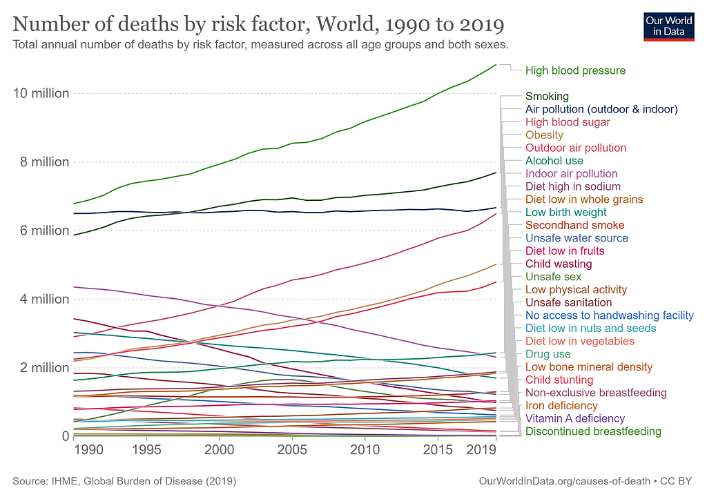
It’s clear that unsafe drinking water is a problem for global health. In this project, I will be using Decision Trees and Random Forests to classify water as either potable or unpotable. I will also be attempting to analyze which features are most important in predicting water portability.
Predicting Water Potability with Decision Trees and Random Forests
This data set was found on Kaggle. https://www.kaggle.com/datasets/adityakadiwal/water-potability
After reading in the data and importing the necessary libraries, this is what our data looks like.
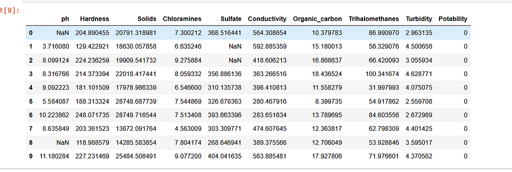
The data consists of 3,276 water samples and contains 9 numeric values.
1. pH Value
2. Hardness
3. Solids
4. Chloramines
5. Sulfate
6. Conductivity
7. Organic_carbon
8. Trihalomethanes
9. Turbidity
10. PotabilityWhat are the features?
- PH Value represents the acid-base balance of the water. WHO recommends a permissible PH range of 6.5 to 8.5. All data points in this data set are between 6.52 and 6.83 which are all within the range of the WHO.
- Hardness is caused by calcium and magnesium deposits seeping into water from geologic deposits.
- Solids represents the total dissolved solids found in the water which can include disolved organic materials and inorganic materials.
- Chloramines represents total chlorine levels found in water. Chlorine and chloramine are the major disinfectants used in public water systems. Chloramines are most commonly formed when ammonia is added to chlorine to treat drinking water. Chlorine levels up to 4 milligrams per liter (mg/L or 4 parts per million (ppm)) are considered safe in drinking water.
- Sulfate are naturally occurring substances found in minerals, soil, and rocks. Sulfate concentration in freshwater is about 3 to 30 mg/L in freshwater supplies, yet in saltwater supplies the range is about 2,700 mg/L.
- Conductivity measures the ionic process of a solution that it enables it to transmit current. According to WHO standards, EC value should not exceed 400 μS/cm.
- Organic_carbon is a measure of the total amount of carbon in organic compounds in pure water. According to US EPA < 2 mg/L as TOC in treated / drinking water, and < 4 mg/Lit in source water which is use for treatment.
- Trihalomethanes are chemicals that may be found in water treated with chlorine. The concentration of THMs in drinking water varies according to the level of organic material in the water, the amount of chlorine required to treat the water, and the temperature of the water that is being treated. THM levels up to 80 ppm is considered safe in drinking water.
- Turbidity is a measure of light emitting properties of water and the test is used to indicate the quality of waste discharge with respect to colloidal matter. The mean turbidity value obtained for Wondo Genet Campus (0.98 NTU) is lower than the WHO recommended value of 5.00 NTU.
- Potability value of 1 indicates Potable (safe for human consumption) and 0 indicates not potable (not safe for human consumption).
Checking class balance in our data set
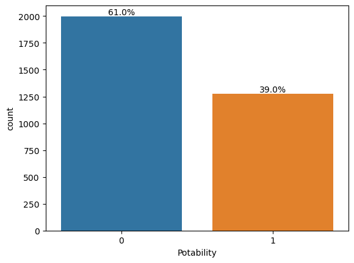
In this case, our data set is slightly imbalanced with class 0 representing 61.0% of our population and class 1 representing 39.0% of our data. This isn’t an extreme class imbalance, but we will create a balanced data set in order to analyze which dataset yield better model performance.
Dealing with Class Imbalance
There are several ways to deal with class imbalance. Below are four common methods.
- Oversampling. The goal of this technique is to increase increase the representation of the minority class by generating synthetic data. There are several methods by which we can generate synthetic data.
- Undersampling. This process involves randomly getting rid of data points of the majority class until the two classes are balanced.
- Class weighting. This process involves assigning higher weights to the minority class during model training.
- SMOTE (Synthetic Minority Over-sampling Technique) This process generates synthetic data of the minority class by identifying minority data points and neighboring data points and creating synthetic points via some form of interpolation.
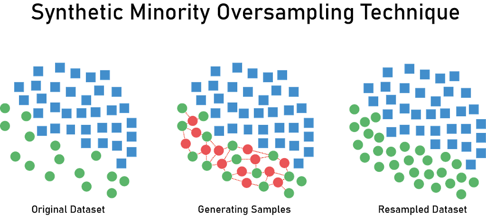
Creating a balanced data set
# create a balanced data set
import pandas as pd
from sklearn.utils import resample# Assuming your original dataset is stored in a DataFrame called 'df'
# Separate majority and minority classes
majority_class = df[df['Potability'] == 0] # Replace 'target' with the name of your target column
minority_class = df[df['Potability'] == 1]
# Undersample majority class
undersampled_majority = resample(majority_class,
replace=False, # Set to False to perform undersampling without replacement
n_samples=len(minority_class), # Set the number of samples to match the minority class
random_state=42) # Set a random state for reproducibility# Combine undersampled majority class with the minority class
balanced_df = pd.concat([undersampled_majority, minority_class])# Shuffle the dataset to randomize the order
balanced_df = balanced_df.sample(frac=1, random_state=42).reset_index(drop=True)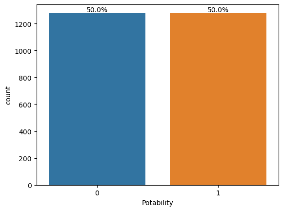
Our dataset is now balanced with a 50–50 representation of each type of class. However, due to our use of undersampling our data set now is 21.97% smaller than it used to be. This may have an effect on our model performance which we will assess later.
Checking for a correlation between different variables.
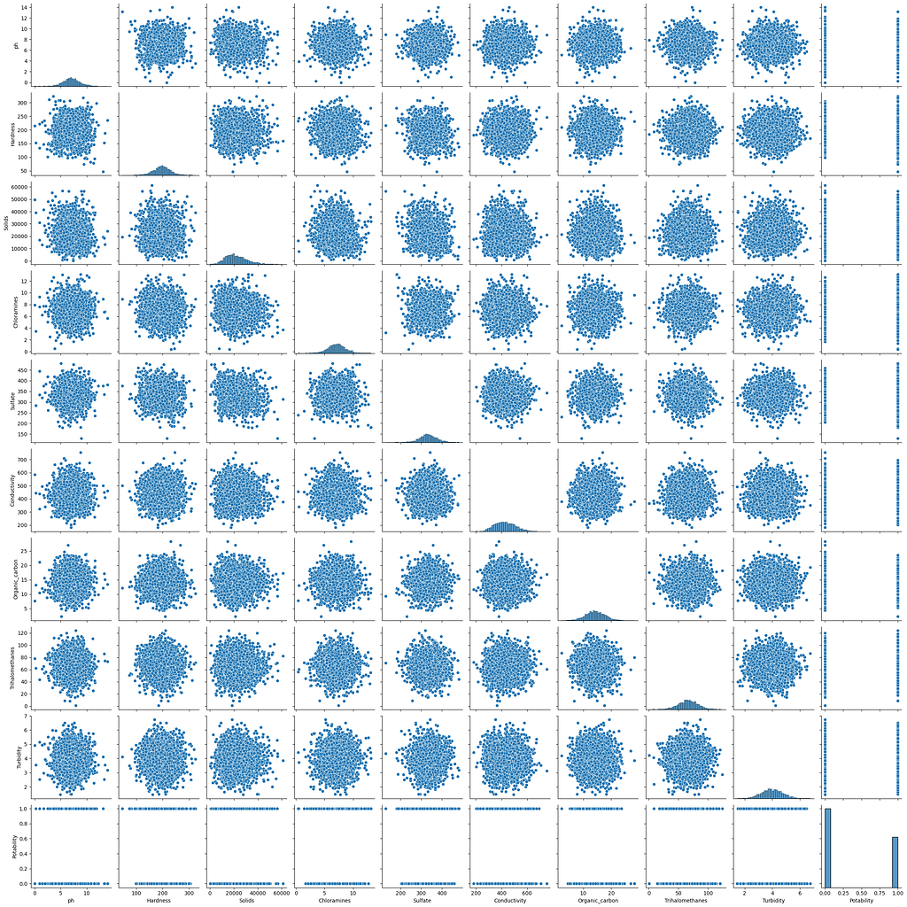
There doesn’t seem to be a clear correlation between any of the variables.
Also, we will mathematically calculate the correlations of our values.
correlation_matrix = df.corr()
print(correlation_matrix)ph Hardness Solids Chloramines Sulfate \
ph 1.000000 0.082096 -0.089288 -0.034350 0.018203
Hardness 0.082096 1.000000 -0.046899 -0.030054 -0.106923
Solids -0.089288 -0.046899 1.000000 -0.070148 -0.171804
Chloramines -0.034350 -0.030054 -0.070148 1.000000 0.027244
Sulfate 0.018203 -0.106923 -0.171804 0.027244 1.000000
Conductivity 0.018614 -0.023915 0.013831 -0.020486 -0.016121
Organic_carbon 0.043503 0.003610 0.010242 -0.012653 0.030831
Trihalomethanes 0.003354 -0.013013 -0.009143 0.017084 -0.030274
Turbidity -0.039057 -0.014449 0.019546 0.002363 -0.011187
Potability -0.003556 -0.013837 0.033743 0.023779 -0.023577
Conductivity Organic_carbon Trihalomethanes Turbidity \
ph 0.018614 0.043503 0.003354 -0.039057
Hardness -0.023915 0.003610 -0.013013 -0.014449
Solids 0.013831 0.010242 -0.009143 0.019546
Chloramines -0.020486 -0.012653 0.017084 0.002363
Sulfate -0.016121 0.030831 -0.030274 -0.011187
Conductivity 1.000000 0.020966 0.001285 0.005798
Organic_carbon 0.020966 1.000000 -0.013274 -0.027308
Trihalomethanes 0.001285 -0.013274 1.000000 -0.022145
Turbidity 0.005798 -0.027308 -0.022145 1.000000
Potability -0.008128 -0.030001 0.007130 0.001581
Potability
ph -0.003556
Hardness -0.013837
Solids 0.033743
Chloramines 0.023779
Sulfate -0.023577
Conductivity -0.008128
Organic_carbon -0.030001
Trihalomethanes 0.007130
Turbidity 0.001581
Potability 1.000000None of our data points appear to be correlated with each other. The highest correlation we have is .082 which is the correlation between pH and Hardness. This value is so low that we will just proceed.
Preparing our Data
Let’s check for missing data.

All the variables are numerical so we don’t need to convert any of the data; however, there is quite a bit of missing data so we need to deal with those values.
Preparing our Data
Let’s check for missing data.
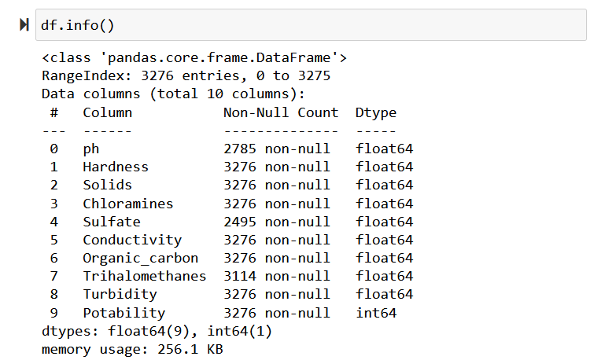
All the variables are numerical so we don’t need to convert any of the data; however, there is quite a bit of missing data so we need to deal with those values.
Dealing with the missing values
As we can see there are a good amount of missing values that we need to deal with. Each variable has different amounts of missing values so the values appear to be missing at random. Further, some of our variables appear to be missing significant shares of their values(approximately 15% of pH and Sulfate is missing), and thus, it’s inappropriate to simply delete the rows as we would lose a great amount of our training data.
Based on our high amount of missing values and the apparent randomness of values that are missing, mean imputation, median imputation, and most frequency imputation seem most appropriate to use. We can use each imputation method and later assess model accuracy on each set of imputed data.
df_mean = df.apply(lambda x: x.fillna(x.mean()))
df_median = df.apply(lambda x: x.fillna(x.median()))
df_mode = df.apply(lambda x: x.fillna(x.mode()))After replacing all the NaN values with the respective Mean and Median of the feature the data contained no missing values as is seen below.
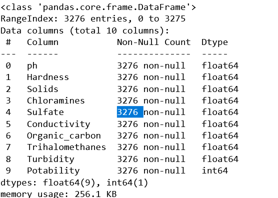
My guess is that the median value will be most accurate because it better accounts for extreme values, and mode imputation tends to be better for categorical data.
Problem with Mode Imputation
I ran into a problem when attempting to replace all of the values with the mode (most frequent value). In many cases, there can be multiple “most frequent values”, and thus there are several instances in which the mode method returns a series and not a singular value. Thus, there are still many NaN values. To avoid simply dropping these values we will not be using mode imputation and instead only rely on median and mean imputation.
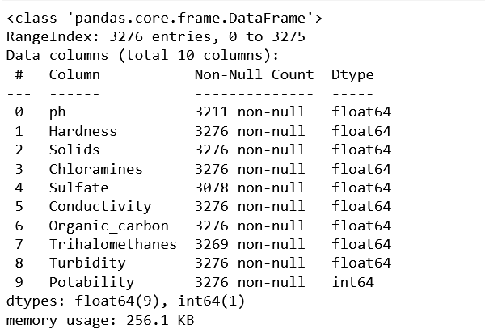
In the future, we can also experiment with more advanced types of imputation methods such as K Nearest Neighbors Imputation, Regression Imputation, or SMOTE as aforementioned.
Implementing and Evaluating Machine Learning Models
Train Test Split
from sklearn.model_selection import train_test_split
X = df_mean.drop('Potability',axis=1)
y = df_mean['Potability']
X_train, X_test, y_train, y_test = train_test_split(X, y, test_size=0.30, random_state=101)Here we are splitting the data into a “training” set, data which we will train our machine learning algorithm on, and a “testing” set, data which we will hold back in order to see the how accurate our model performed.
Decision Tree Model Theory
The decision tree model can be used for both regression and classification tasks and is a form of supervised learning because it requires the data to be labeled in order to create the model. Unsupervised learning on the other hand works with unlabeled data and can find patterns that we had previously not seen.
In this case, we will be using the decision tree model for a classification task. The model works by creating a series of logical statements to classify data into its proper classes. The model works by optimizing the logical statements it chooses, choosing a condition at each step of the decision tree which maximizes information gain.
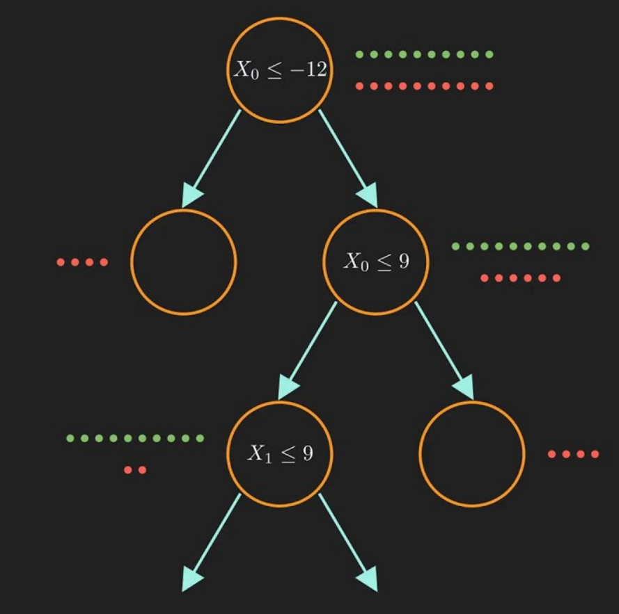
In the case of regression, we are attempting to predict a numeric value rather than classify data. In this case, the algorithm selects which feature will optimize variance reduction such as mean squared reduction or mean absolute error rather than information gain.
Problems with decision trees Decision trees are prone to overfitting. Overfitting is when a machine learning model learns from a set of training data “too well” and consequently is unable to replicate well on unseen data. Essentially, the model becomes so accurate on the training data that it is highly biased when assessing new data. Decision trees are especially prone to overfitting when there are many features in our data or if the tree grows too deep. The deeper the tree grows, the more likely overfitting will occur. Other problems that can lead to overfitting in decision trees arise from the size and distribution of our data. Overfitting can occur when our data is too small or when it’s unbalanced.
Example of overfitting in classfication.
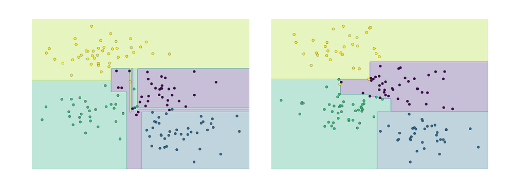
Techniques to avoid overfitting
Pruning involves simplifying decision trees which have grown too complex and have lead to overfitting.
- Pre-pruning occurs before trees have fully developed and can involve setting a maximum tree depth, setting a minimum number of classified samples, setting a minimum impurity improvement, or setting a maximum number of leaf nodes.
- Post-pruning is another option which simiplifies decision trees after they have fully grown. This technique can involve removing branches if their removal leads to improved classification rate or by iteratively removing branches which reduce model complexity.
In addition to these techniques we can also use Random Forests to avoid overfitting.
Random Forest Model
In order to address the common problem of overfitting with decision trees we can use a machine learning method known as random forests.
A random forest model essentially works by creating a series of different decision trees and taking the majority decision of the trees. The process of implementing a random forest is as follows.
- Randomly select a subset of the training data (with replacement) to create a bootstrapped sample.
- In this case, “with replacement” refers to the fact that data can be resampled in multiple constructed decision trees. For example, if you have a sample of 200 data points and select a subset of 100 data points for each tree with replacement, each data point has a chance of being selected more than once. Further, it is possible that some data points will be selected multiple times while others not at all. The selection of this data is done completely at randomly and every data sample from the original has an equal chance of being selected for each new dataset.
- Randomly select a subset of features to consider at each split of the decision tree. The number of features that can be considered is a hyperparameter that we can alter.
- Create a decision tree based on each bootstrapped set of data using the selected features.
- REPEAT PROCESS
- To make a prediction, pass a data point into all the decision trees and take the majority vote from the trees.
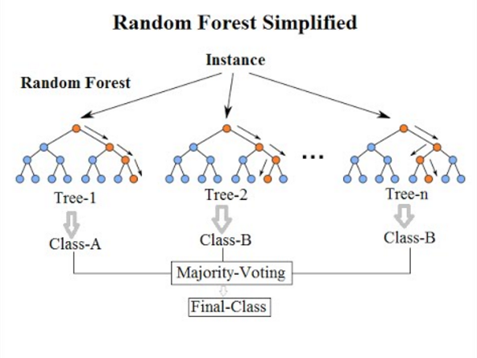
Bootstrapping
This is a term that typically refers refers to “pulling oneself up by the bootstraps” or use one’s resources in order to achieve a goal. In statistics, the term bootstrapping is used to refer to the idea of using the data itself to estimate its properties without assuming the underlying distribution.
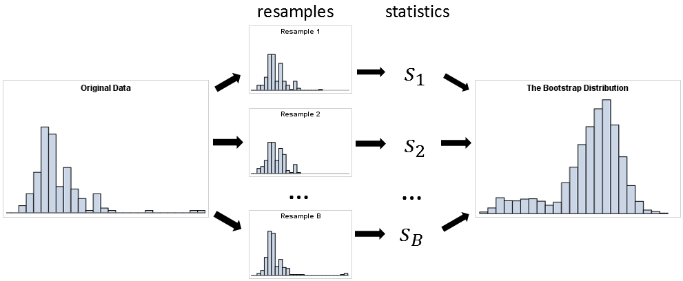
How many trees are used in a random forests?
This depends on model performance. There is however a point of diminishing returns in which adding new trees doesn’t necessarily improve the generalization of the model. We can evaluate the number of trees using several techniques and alter the amount as a hyperparameter.
Decision Tree Model Implementation
from sklearn.tree import DecisionTreeClassifier
dtree = DecisionTreeClassifier()
dtree.fit(X_train,y_train)Predict and Evaluate Decision Tree
predictions = dtree.predict(X_test)
from sklearn.metrics import classification_report,confusion_matrix
print(classification_report(y_test,predictions))Interpreting Classification Reports
Precision measures what percent of predicted true values of a particular class are indeed true. In this case for class 0, the precision is 0.68 which means that 68% of the instances the model predicted to be as class 0 (water not potable) are indeed class class 0 instances.
Recall also known as the sensitivity or true positive rate, calculates the percentage of true positive instances which are correctly by the model. In the case of Random Forest (median imputation), the model correctly identified 89% of actual instances belonging to class 0, while only recalling 34% of of actual instances of class 1. (Why such a large disparity)
F-1 Score: F-1-score is the harmonic mean of precision and recall metrics and can be used as a metric representing both values. Harmonic means are useful for addressing imbalance and give more value to smaller values, thus reducing the impact of outliers. In this case we want to balance precision and recall, and thus, use the harmonic mean.
Support: Support metric is simply the number of instances we have in our data set of each class.
Accuracy: Accuracy calculates the model’s predictions regardless of the class. Thus, an accuracy value of 0.68 means that 68% of all instances of all instances were correctly classified.
Macro Avg calculates the average precision, recall and F-1 score across classes.
Weighted Avg calculates the weighted average of precision, recall and F-1 considering the support (number of instances of each class).
Example calculating values from confusion matrix.
print(confusion_matrix(y_test,predictions))[[542 61]
[243 137]]Precision
Class 0: 542 / (542 + 243) = 0.69 Actual 0’s / Total Predicted 0's
Class 1: 137 / (137 + 69) = Actual 1’s / Total Predicted 1's
precision refers to how accurate the models predictions were per class
Recall
Class 0: 542 / 603 = 0.90 Correctly predicted 0’s / Actual 0's
Class 1: 137/380 = 0.36 Correctly predicted 1’s / Actual 1's
recall refers to what percentage of the values were correctly predicted
precision recall f1-score support 0 0.69 0.90 0.78 603
1 0.69 0.36 0.47 380 accuracy 0.69 983
macro avg 0.69 0.63 0.63 983
weighted avg 0.69 0.69 0.66 983Decision Tree Model with Mean Imputed Values
precision recall f1-score support 0 0.68 0.65 0.67 603
1 0.48 0.52 0.50 380 accuracy 0.60 983
macro avg 0.58 0.58 0.58 983
weighted avg 0.61 0.60 0.60 983Random Forest Model with Mean Imputed Values
precision recall f1-score support 0 0.68 0.89 0.77 603
1 0.67 0.35 0.46 380 accuracy 0.68 983
macro avg 0.68 0.62 0.62 983
weighted avg 0.68 0.68 0.65 983Decision Tree Model with Median Imputed Values
precision recall f1-score support 0 0.67 0.62 0.64 603
1 0.46 0.51 0.49 380 accuracy 0.58 983
macro avg 0.57 0.57 0.57 983
weighted avg 0.59 0.58 0.58 983Random Forest Model with Median Imputed Values
precision recall f1-score support 0 0.69 0.89 0.78 603
1 0.68 0.36 0.47 380 accuracy 0.69 983
macro avg 0.68 0.63 0.62 983
weighted avg 0.68 0.69 0.66 983Random Forest Model with Median Imputed Values (Balanced Dataset)
So far our best-performing model has been the Random Forest with Median Impuation (weighted avg f1-score: 0.66) performing slightly better than Random Forest with Mean Imputation (weighted avg f1-score: 0.65).
As we can see in the classification report the model performs slightly worse in precision for class 1 (the underrepresented class) and significantly worse in recall.
We will now train and evaluate the Random Forest Model with Median Imputed Data, but this time use the data set we created which addresses undersamples class 0 to address the strong class imbalance.
Confusion Matrix
[[243 149]
[138 237]]Classification Report
precision recall f1-score support 0 0.64 0.62 0.63 392
1 0.61 0.63 0.62 375 accuracy 0.63 767
macro avg 0.63 0.63 0.63 767
weighted avg 0.63 0.63 0.63 767As we can see when we use the balanced data set, our recall for class 1 significantly improves from 0.36 to 0.63. However, our overall model performance measured by our weighted avg f1-score slightly worsens from 0.66 to 0.63. Overall, while our weighted avg f1-score slightly worsens, the drastic improvement in recall for class 1 makes this a more consistent and reliable model.
Feature Importances
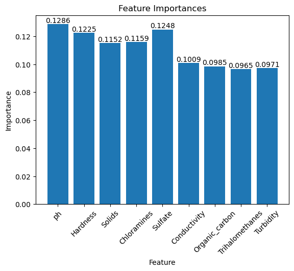
Feature importances signify which features are most influential in a particular machine learning model. All feature importances sum to 0, and the higher the value, the more influential the feature is in the model. In certain cases, where our model contains features with low feature importance, we can consider removing them in order to achieve a simpler and more efficient model.
In this case, all of our features appear to be very similar in importance. This can potentially be caused by the ensemble method, random forests make use of. When generating so many decision trees and averaging out their results, feature importance may become averaged out, with all features being represented as equally important.